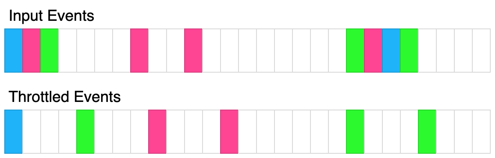

| Category | Difficulty | Likes | Dislikes |
|---|---|---|---|
| JavaScript | Hard | 14 | 5 |
Batching multiple small queries into a single large query can be a useful optimization. Write a class QueryBatcher that implements this functionality.
The constructor should accept two parameters:
queryMultiple which accepts an array of string keys input. It will resolve with an array of values that is the same length as the input array. Each index corresponds to the value associated with input[i]. You can assume the promise will never reject.t.The class has a single method.
async getValue(key). Accepts a single string key and resolves with a single string value. The keys passed to this function should eventually get passed to the queryMultiple function. queryMultiple should never be called consecutively within t milliseconds. The first time getValue is called, queryMultiple should immediately be called with that single key. If after t milliseconds, getValue had been called again, all the passed keys should be passed to queryMultiple and ultimately returned. You can assume every key passed to this method is unique.The following diagram illustrates how the throttling algorithm works. Each rectangle represents 100ms. The throttle time is 400ms.

Example 1:
Input:
queryMultiple = async function(keys) {
return keys.map(key => key + '!');
}
t = 100
calls = [
{"key": "a", "time": 10},
{"key": "b", "time": 20},
{"key": "c", "time": 30}
]
Output: [
{"resolved": "a!", "time": 10},
{"resolved": "b!", "time": 110},
{"resolved": "c!", "time": 110}
]
Explanation:
const batcher = new QueryBatcher(queryMultiple, 100);
setTimeout(() => batcher.getValue('a'), 10); // "a!" at t=10ms
setTimeout(() => batcher.getValue('b'), 20); // "b!" at t=110ms
setTimeout(() => batcher.getValue('c'), 30); // "c!" at t=110ms
queryMultiple simply adds an "!" to the key
At t=10ms, getValue('a') is called, queryMultiple(['a']) is immediately called and the result is immediately returned.
At t=20ms, getValue('b') is called but the query is queued
At t=30ms, getValue('c') is called but the query is queued.
At t=110ms, queryMultiple(['a', 'b']) is called and the results are immediately returned.Example 2:
Input:
queryMultiple = async function(keys) {
await new Promise(res => setTimeout(res, 100));
return keys.map(key => key + '!');
}
t = 100
calls = [
{"key": "a", "time": 10},
{"key": "b", "time": 20},
{"key": "c", "time": 30}
]
Output: [
{"resolved": "a!", "time": 110},
{"resolved": "b!", "time": 210},
{"resolved": "c!", "time": 210}
]
Explanation:
This example is the same as example 1 except there is a 100ms delay in queryMultiple. The results are the same except the promises resolve 100ms later.Example 3:
Input:
queryMultiple = async function(keys) {
await new Promise(res => setTimeout(res, keys.length * 100));
return keys.map(key => key + '!');
}
t = 100
calls = [
{"key": "a", "time": 10},
{"key": "b", "time": 20},
{"key": "c", "time": 30},
{"key": "d", "time": 40},
{"key": "e", "time": 250}
{"key": "f", "time": 300}
]
Output: [
{"resolved":"a!","time":110},
{"resolved":"e!","time":350},
{"resolved":"b!","time":410},
{"resolved":"c!","time":410},
{"resolved":"d!","time":410},
{"resolved":"f!","time":450}
]
Explanation:
queryMultiple(['a']) is called at t=10ms, it is resolved at t=110ms
queryMultiple(['b', 'c', 'd']) is called at t=110ms, it is resolved at 410ms
queryMultiple(['e']) is called at t=250ms, it is resolved at 350ms
queryMultiple(['f']) is called at t=350ms, it is resolved at 450ms
Constraints:
0 <= t <= 10000 <= calls.length <= 101 <= key.length <= 100